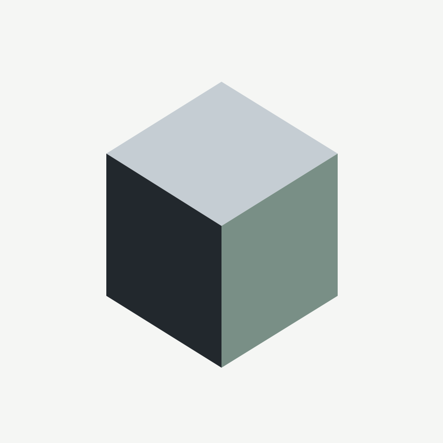
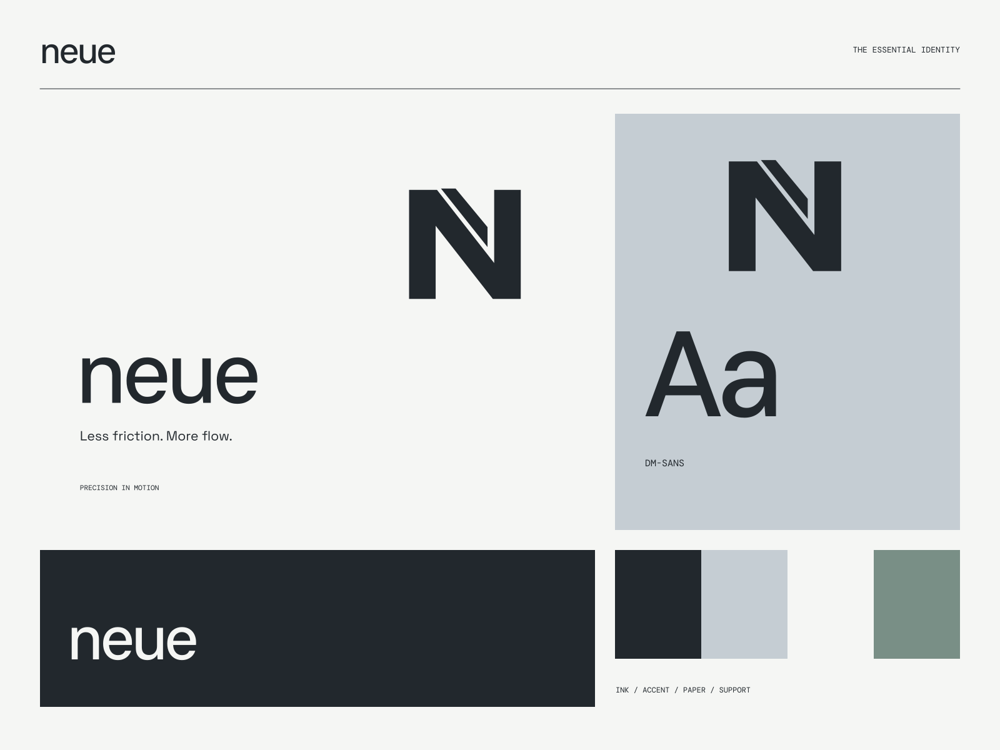

01
One clear place
A modular workspace that puts the useful things first.
A MORE CONSIDERED DIGITAL WORKSPACE
Less friction. More flow. Clarity is the feature.

A coherent little world
Clarity is the feature. Less friction. More flow.
01
A modular workspace that puts the useful things first.
02
Thoughtful defaults and a hierarchy that makes sense.
03
A quiet interface that lets the work do the talking.

The point of view
Folded aluminum-like surfaces, disciplined neutral typography, and modular documentation. Contrast, alignment, and sequence create the entire visual language.